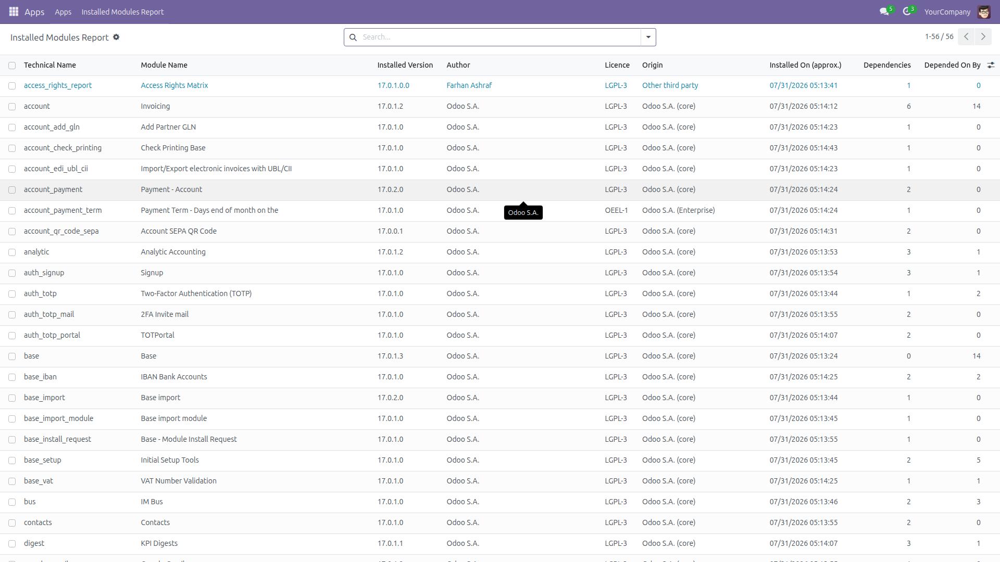
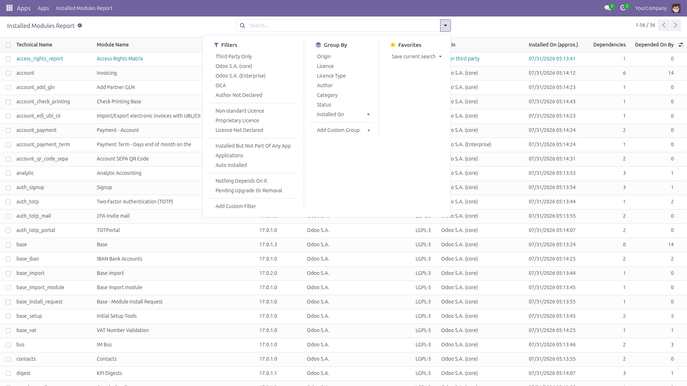
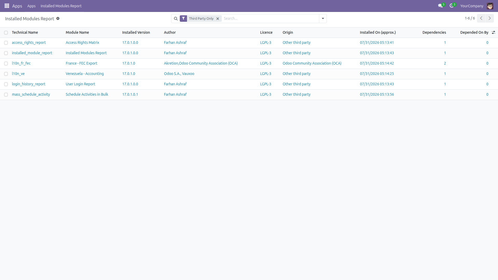
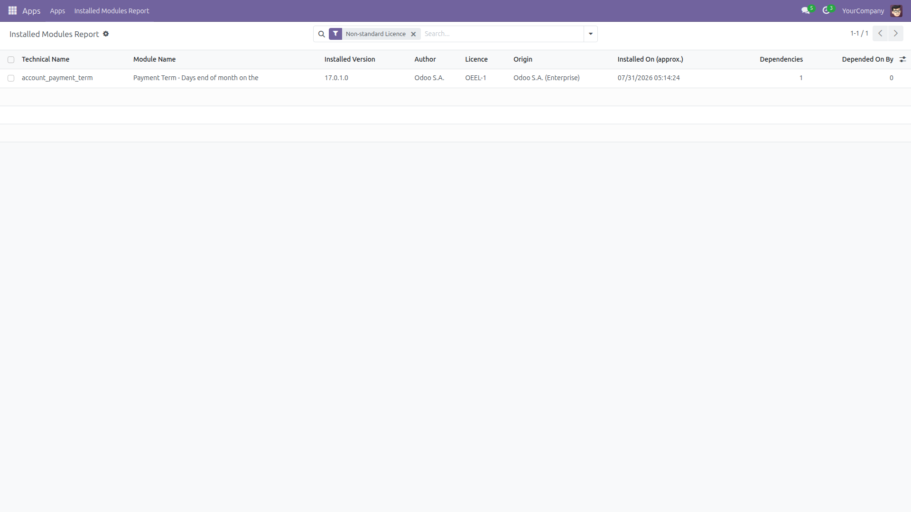
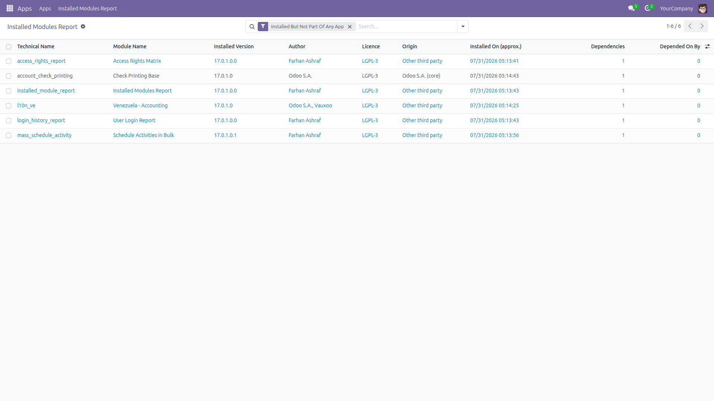
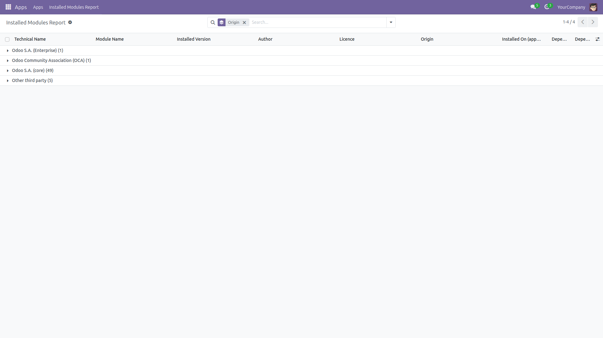
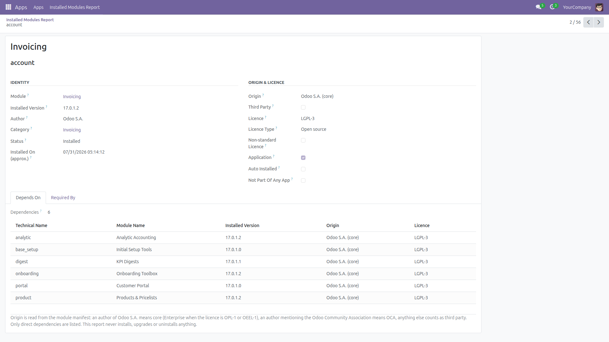
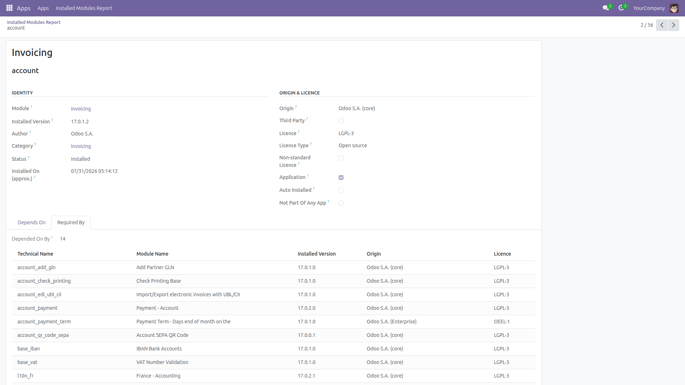

Installed Modules Report
What is installed · what is third party · what depends on what
Before an upgrade or an audit somebody always asks the same three questions: what is actually installed on this database, how much of it is third party, and what breaks if we remove this one? The Apps screen answers none of them well. This module adds a read-only report over the module list with the version, author, licence, origin and dependencies of every installed module.
Free and open source (LGPL-3), Odoo 14.0 through 19.0.
- Every installed module in one list — technical name, module name, installed version, author, licence, category and status. Modules that are not installed never appear.
- Origin classification — Odoo S.A. (core), Odoo S.A. (Enterprise), Odoo Community Association (OCA), other third party, or author not declared. How it is worked out is spelled out below and repeated on the report itself.
- Direct dependencies and reverse dependencies — what this module needs, and which installed modules would break without it, both as counts you can sort on and as clickable lists.
- Approximate install date — Odoo records no install date, so the report shows the creation date of the oldest external ID the module wrote, which is stamped the first time it loads.
- Three audit filters — Third Party Only, Non-standard Licence, and Installed But Not Part Of Any App, plus filters for proprietary licences, applications, auto-installed link modules, modules nothing depends on, and modules queued for upgrade or removal.
- Group and export — group by origin, licence, licence type, author, category, status or install month, then export the list to spreadsheet for the audit file.
- Read-only, and fast — a single SQL view with grouped sub-queries, and one query per page for the dependency lists rather than one per module. The module has no write, create or delete access at all: it never installs, upgrades or uninstalls anything, and it never edits the module list.
- Administrator only — visible to the Administration / Settings group; nobody else can read it.
How modules are classified
The report reads the module manifest, and a manifest can lie — so the rules are stated in full rather than hidden:
- An author of Odoo S.A. (also Odoo, Odoo SA, Odoo PS, OpenERP) means Odoo core — or Enterprise when the licence is OPL-1 or OEEL-1.
- An author mentioning Odoo Community Association or (OCA) means OCA.
- Everything else is other third party, and an empty author is reported as author not declared — a bucket that only ever fills on Odoo 19, because up to Odoo 18 Odoo itself substitutes “Odoo S.A.” for a missing author. A module co-authored by Odoo and a partner (“Odoo S.A., Vauxoo”) is deliberately counted as third party: an inventory that exists to find third-party code should over-report, not under-report.
- Third Party is ticked for everything not published by Odoo S.A., which includes OCA modules.
- Non-standard Licence is ticked for every module whose licence is not LGPL-3, the licence Odoo Community itself ships under — stronger copyleft (GPL, AGPL), proprietary (OPL-1, OEEL-1, other), or no licence at all. Odoo Enterprise modules are OEEL-1 and appear here by design.
- Installed But Not Part Of Any App means the module is not an application itself, was not auto-installed as a link module, and no installed module lists it as a dependency.
Screenshots

Every installed module with version, author, licence, origin, approximate install date and both dependency counts.

The ready-made filters and groupings, from third-party only to modules queued for upgrade or removal.

Third party only: everything on this database that Odoo S.A. did not publish, OCA included.

Non-standard licence: everything that is not LGPL-3 — here a single OEEL-1 module on an otherwise LGPL-3 database.

Installed but not part of any app: not an application, not auto-installed, and nothing depends on it.

Grouped by origin — how much of this database is core, Enterprise, OCA or other third party.

One module in detail, with its direct dependencies. The classification rules are repeated at the bottom of the form.

The other direction: the installed modules that would break if this one went away.
Installation
- Copy the module into your addons path, or install it from the Apps list.
- Open Apps, remove the “Apps” filter, search for Installed Modules Report and click Install.
- Only the standard
base module is required.
Configuration
- No configuration is needed — the report works as soon as the module is installed.
- Access is restricted to the Administration / Settings group. The module grants read access only: no user, administrator included, can write to the report.
- Optional: mark the menu as a favourite for one-click access.
Usage
- Go to Apps → Installed Modules Report.
- The list opens on every installed module, ordered by technical name.
- Apply a filter — Third Party Only, Non-standard Licence, Installed But Not Part Of Any App, Proprietary Licence, Nothing Depends On It, Pending Upgrade Or Removal — or search by module, author or licence.
- Group by Origin to see how much of the database is core, Enterprise, OCA or third party.
- Open a line to read its direct dependencies and the installed modules that require it, then follow the links to walk the chain.
- Select all and use Export to attach the inventory to your upgrade or audit file.
Limits, stated plainly
- It reports, it never acts. The module has read access only. It never installs, upgrades or uninstalls anything, never edits the module list, and adds no button that does.
- Only direct dependencies. Dependency and reverse-dependency lists are one level deep; they are not walked transitively, so “nothing depends on it” is not by itself permission to uninstall. For the same reason a module needed only by another loose non-app module is not listed under Installed But Not Part Of Any App.
- Declared Dependencies can exceed the Depends On list. The count is what the manifest declares; the list resolves only the dependencies actually installed. They differ when a declared dependency is missing from the database — which is itself worth investigating. The reverse direction counts installed modules only, so there the count and the list always agree.
- Classification is only as good as the manifest. Up to Odoo 18 a module that declares no author at all is recorded by Odoo as “Odoo S.A.” and will be reported as core — so an empty Author Not Declared filter is not proof that every manifest names its author. Localisation modules that ship with Odoo but declare a community author are reported as third party, because that is what their manifest says. Odoo likewise replaces a missing licence with LGPL-3, so there is no “licence not declared” filter: it could never match.
- The install date is an approximation — the oldest external ID the module created. Modules that create no external ID show an empty date, and a module re-installed later keeps the older date if its external IDs survived.
- Long dependency lists are shortened in the one-line summary columns: the first eight names, then “+N more”. The lists on the form are always complete.
- The report is a database view, so it is computed on each search rather than read from a stored table — fine for an audit screen, slower than a plain table. The install-date lookup deliberately probes the external-ID index per module instead of aggregating the whole
ir_model_data table, which keeps the cost tied to the number of installed modules rather than to the size of your database.
License: LGPL-3 · Source on GitHub · Issues and contributions welcome.